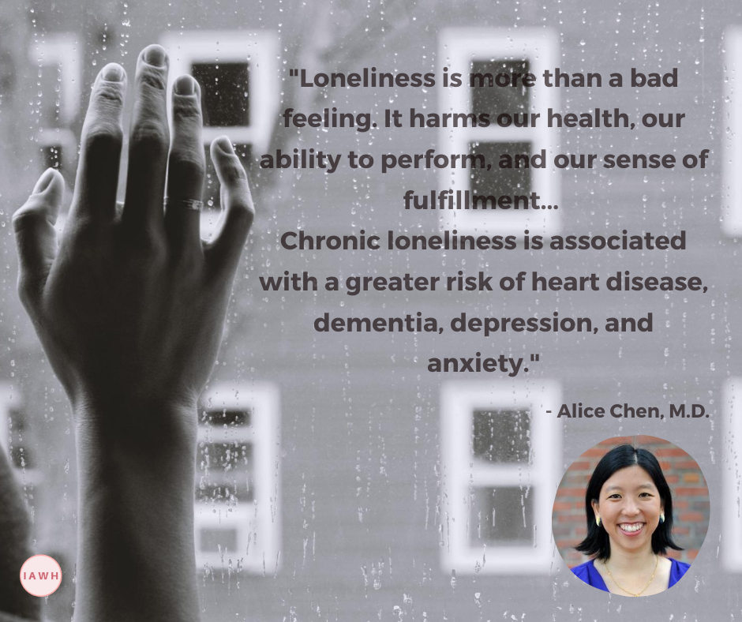

By Janine Payne
It seems that loneliness and social isolation have been topics that are rocking the airwaves, especially since COVID-19, and that’s understandable. However, I recently read an article about a woman in the United Kingdom who in 2017 tossed out a question to her friends and followers on social media asking if they’d ever experienced loneliness. The response was overwhelming, with many people acknowledging and sharing brief examples of personal loneliness; several people commented that for whatever reason, they didn’t really talk about it with anyone. That was three years ago.
Today, I’ve started to delve into this topic even more since learning that our organization would host Dr. Alice Chen, an internal medicine physician to talk about loneliness and social isolation (learn more and register here). Dr. Chen & Dr. Vivek Murthy co-wrote an article, “Coronavirus Could Cause a Social Recession” (The Atlantic), and says that “The pandemic could trigger something else: a social recession—a fraying of social bonds that further unravel the longer we go without human interaction. This can have harmful effects on people’s mood, health, ability to work and learn, and sense of community.”
That’s not all, they also said that young adults share a large burden of loneliness and social isolation, and “More adults in the United States struggle with loneliness than smoke or have diabetes. And this is not unique to the United States. Australia, the United Kingdom, Denmark, the Netherlands, and a growing list of other countries, recognizing a profound and widespread problem, have started anti-loneliness initiatives to educate the public and promote community-building practices.”
So, I thought – wait, hold on – not on our watch! The Institute for the Advancement of Women’s Health (IAWH) is designed to address health issues – that’s why we’re here. Women can serve as change agents to help each other get through loneliness and social-isolation – but through platforms (yes, online) where we can gather, share, say “Hello From the Other Side” (come on Adele) with each other. We can learn from women in Africa, India, China, UK, Denmark, Canada, and other countries what they are doing to combat loneliness…surviving, and not just during the pandemic, but moving forward. Period.
Take this example of how connections can help save lives:
Dixon Chibanda, MD, is one of 12 psychiatrists in Harare, Zimbabwe with a population of more than 16 million and founder of the Friendship Bench program. He trained elderly Zimbabwean women to deliver evidence-based talk therapy on benches under trees to bring care and hope to those in need. Dr. Chibanda is passionate about connecting with ordinary people in ways that improve their lives using simple but effective programs that can be carried out by non-specialists or professionals. He likes to think outside the box as he explores ways of helping people with conditions such as depression, PTSD and ADHD.
In case you didn’t know…humans are the key to helping other humans.
Listen, I know how it feels to be encouraged by a text from a friend that includes a Bible scripture, quote from Brene Brown, Maya Angelou (yep, she’s one of my favorites too), or a matter of fact line from a poem by Nikki Giovanni has shifted my mood or outlook. The smallest intervention can help. Dr. Chen says, “Loneliness is more than a bad feeling. It harms our health, our ability to perform, and our sense of fulfillment.”

I don’t know about you, but I believe that a Woman’s Secret Weapon is even more potent when she’s being authentic – that’s when the connection with others, happens. We know it when we feel it, see it, read it or hear it!
IAWH is calling for a Movement of Connection Driven by Women from Around the World. Four (4) designed spaces are shared below to help us connect with one another. Choose the one (or all) that fits your style of communicating. Let’s Do THIS! Connect 1: Share your health journey by visiting HerStory on our website - whether it’s your story about how you fought cancer, survived _ (you fill in the blank, girl!), or to demonstrate how you overcome feelings of loneliness/anxiety/isolation, the hobby or activity that you adopted that helped you cope after a relationship ended - there is a story in each of us that can help inspire strength and the ability to move on for another woman. Submit a short video or written story here!
Connect 2: “IAWH Connection” is our private Facebook group. The name says it all. It’s a place to chill, share and gain encouragement, show pics of your walking path, you cooking (eh-hem, but also sharing your recipe), or what you do in your chill time that makes you feel like you. IAWH will be in the housekeeping things tidy but adding interesting and inspiring content regularly. Visit here and join the group.
Connect 3: Sign up to Volunteer with IAWH. You can be from anyplace from around the world, and perhaps you desire to be featured as one of our guest bloggers, serve as a guest speaker at one of our Saturday Morning Ladies Lounge events, or help us design more events to get women involved in helping other women fulfill their fullest health and life potential. These are ideas – you tell us how you’d like to Get Involved.
Connect 4. In the near future, IAWH will host a focus group chat via Zoom about other ways to build a network of women to connect, and you are invited to be a part of it. Sign up to STAY INFORMED by receiving our newsletter, and we will notify you of the day and time. We need your voice and ideas on how to reduce loneliness, social isolation, and work to help make women stronger all around the world.
With your help, IAWH will make small steps all around the world with an aim to encourage shared learning between women for one goal: Better Health, Connectivity, and Wellness.Remember to register for our upcoming event on Loneliness and Social Isolation: www.IAWH.org/Events. See you there!References:
Murthy, Vivek H., Chen, Alice T. Coronavirus Could Cause a Social Recession. The Atlantic. 2020.
Janine E. Payne, M.P.H., is Co-Executive Director of IAWH | Get more IAWH news via email and follow IAWH on Instagram, Twitter, LinkedIn, Facebook and Youtube
This article first appeared on the IAWH Health blog on September 1, 2020 and is preserved here as part of the IAWH Health Journal archive. Information reflects what was known at the time of publication. This article is for general education and is not medical advice.
Topics: Loneliness, Isolation, Women's Health, Mental Health, Connection, Social, Social Isolation, Chen, Murthy